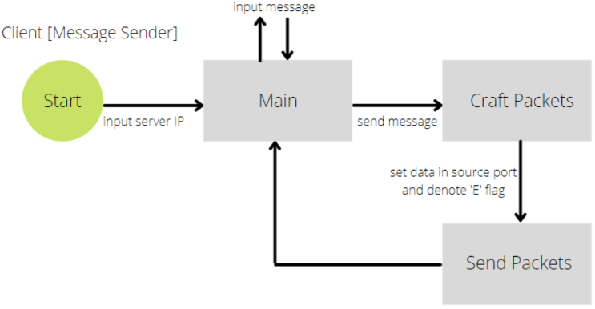
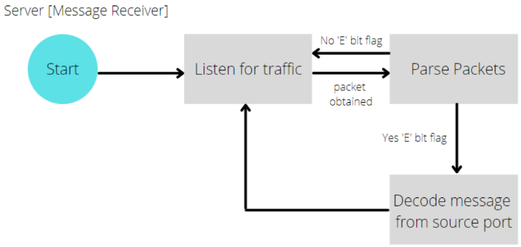
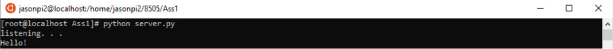
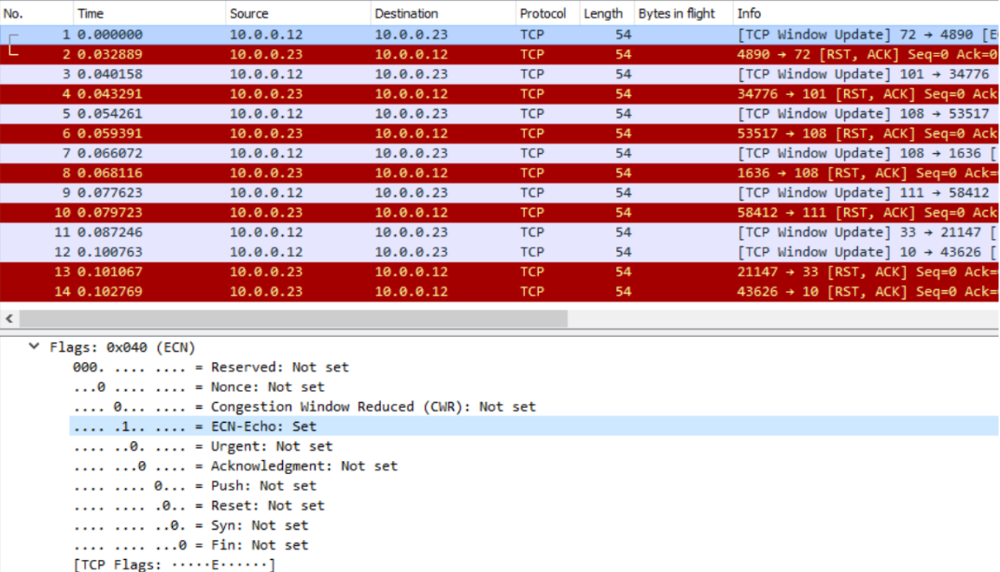

Objective
The main objective for this project was to make use of the standard TCP/IP header fields as carriers of covert information. The methods described in Craig H. Rowland's example has the covert channel utilizing the IP layer's identification field, a 16-bit field, capable of holding 2 ASCII characters per packet. In the document, Rowland mentions a couple viable options for hiding data in covert channels which include the TCP initial sequence number field and the TCP Acknowledge field.
Rowland talks about the reliability of the data sent, as his code does not ACK the packets for retries if there is any error. Another limitation to Rowland's code is that it sleeps for a full second between sending each byte of information.
The implementation that will be used for this project's covert channel will use the source port field while enabling the “E” (ECN – Explicit Congestion Notification) flag bit to denote that the packet is a covert message.
Constraints
- The technique for embedding covert data into the headers must be one that is not covered by any of the techniques in Rowlands paper.
- Only use the TCP, UDP, or IP headers.
- Show all the data supporting the success (or lack thereof) of the data embedding scheme.
- Redesign the application using any programming language of choice.
Approach
The application consists of two components - the backdoor and the handler. The programs were written in python using the scapy library, a packet crafting API.
- The client.py – the covert message sender / the handler
- The server.py – the covert message receiver / the backdoor
The client program will forge packets where the “E” flag (ECN) is set to denote that the packet is a covert message. The message itself will be converted and stored into the source port. The E flag bit was chosen for flagging a covert message because it is rarely used in TCP/IP connections and it requires strict compliance on ECN processing two communicating machines.
The ports are redundant for this implementation since a three-way handshake is not being established. What's expected is the server to respond back with an RST and ACK. The message will be converted to a decimal value and placed within client's source port; the destination port will be set to be completely random.
  overview of the backdoor communication processTesting
Testing was accomplished by using tcpdump and Wireshark to capture traffic and verify inbound packets were flagged with "E" bit and outbound packets were getting RST and ACK.
Monitoring tool
: Wireshark and TCPdump
Results
:
The server IP will be stated within the script and a prompt will occur requesting a message to be sent. Once the message is inputted, the program will craft packets with each byte of the message converted to decimal number which will then be used as a source port for the packets. The packets are flagged with "E" denoting it is a covert message.
The server is listening, receives and confirms it is a covert message and re-converts the source port value back into human readable format and prints into the terminal.
We can confirm that each packet sent from the receiver is denoted with an "E" flag bit with each byte of the message corresponding to a decimal used for the source port. Additionally, the destination port for each packet sent is random. We can also confirm that the server has received the packets as a RST,ACK packet is sent back to the convert sender.
Conclusion
The implementation I have presented improves on Rowland's method by negating the “bounce” feature all together, but just like his implementation it still suffers from reliability. Future changes to rectify this reliability could include using another header field, such as the type of service field, to denote the packet number and attempt a packet retransmission request if the packets did not arrive in order. There are multiple fields and protocols, aside from the ones Rowland mentioned, that can establish a covert channel, such as the ICMP type and code, TCP source port, and UDP source port. Additionally, another way to increase reliability is to include data redundancy and unique sequence numbers between packets. This would allow the covert receiver to verify any missing data and derive that data from the following packets.
Source code
The project source code can be found here .